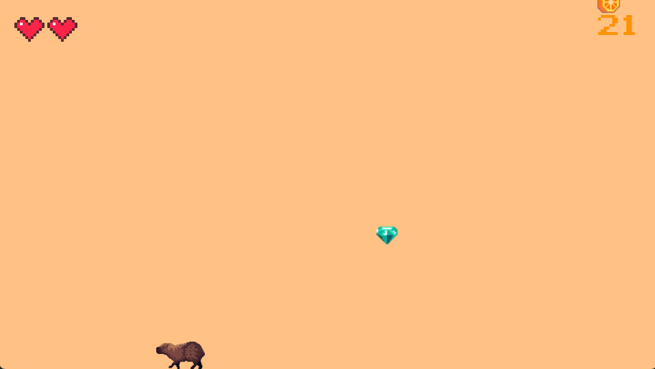

Fruit party to gra polegająca na łapaniu spadających owoców. Przesuwając myszką wzdłuż ekranu sterujesz kapibarą o imieniu Charlie. Charlie lubi owoce, więc chętnie je łapie. Ale, ale! Niektóre owoce mogą nie być świeże! Jak wiadomo, spożywanie zgniłego jedzenia nie kończy się dobrze. Charlie nie jest w tej kwestii wyjątkiem. Musisz uważać, aby łapał on tylko kolorowe owoce, a unikał tych brązowych.
Masz tylko 3 szanse. Łapiąc zgnitka tracisz jedno serduszko, podobnie - gdy upuścisz zdrowy owoc. Wraz z postępem rozgrywki będzie coraz więcej owoców do złapania, a także będą one spadać szybciej. Możesz także zdobyć bonusy w postaci kryształków. Gdy złapiesz jeden z nich, dostaniesz dodatkowych 10 punktów, jednak za upuszczenie - nie stracisz serduszka.
To już wszystko, co musisz wiedzieć o zasadach gry przed rozpoczęciem. Powodzenia!
Te owoce są pyszne!Od tych uciekaj!

Bonusy są na wyciągnięcie łapki!
Funkcje
Obsługa za pomocą myszki
Gracz porusza postacią, a także obsługuje dostępne przyciski na ekranie przy pomocy myszki.
Animowana postać
W trakcie gry odtwarzana jest animacja poruszania łapkami. Postać zwraca się również w odpowiednią stronę, w zależności od kierunku ruchu myszki.
Losowe generowanie owoców i bonusów
Program wybiera losowo, kiedy pojawi się kolejny zgniły owoc lub bonus.
Losowy wybór owoców
Program losuje, jaki gatunek owoca zostanie wygenerowany - zarówno dla zdrowych, jaki i dla zgniłych owoców.
Stopniowe zwiększanie poziomu trudności
Wraz z postępem rozgrywki stopniowo zwiększa się częstotliwość i prędkość spadania owoców.
Możliwość zmiany koloru wersji kolorystycznej
Gracz może wybrać jedną z dwóch wersji kolorystycznych, klikając przycik "change mode". Zmieniają się kolory tła i napisów na każdym z trzech ekranów - startowym, rozgrywki i końcowym.
Zapis najlepszego wyniku
Najlepszy wynik jest przechowywany w pliku "best.txt". Jego zawartość jest aktualizowana po osiągnięciu nowego rekordu i wyświetlana na ekranie końcowym.